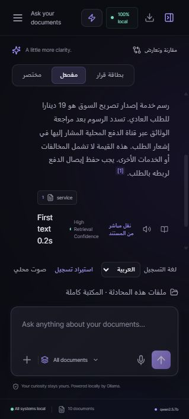

نسخة اختبار محلية • 2026-10-14T12:17:21.774ZDocMind — نتائج القبول والتسليم
نسخة مختبرة على هذا الجهاز بملفات عربية اصطناعية لعشر خدمات حكومية. النموذج المستخدم للتجربة qwen2.5:7b مع bge-m3؛ اسم النموذج الرسمي وملفات اللجنة لم يصلانا، لذلك لا تمثل هذه النتائج تقييم اللجنة أو ضمان الفوز.
52 / 52
اختبارات برمجية ناجحة
16 / 17
فحص إجابات آلي
10 / 10
اختبارات HTTP ورفع وصوت
ما تم التحقق منه
فحص الأنواع ناجح. بناء الإنتاج اجتاز الفحص في الجولة السابقة، واختُبر الآن عبر خادم الإنتاج. الاختبارات البرمجية تغطي صيغ PDF/TXT/MD/DOCX والفهرسة والتخزين المؤقت وعزل المرفقات والاستشهادات ورفض النموذج المفقود وتدفق الإجابة والتحليل ومقارنة الإصدارات. اختبار PDF الآلي يستخدم مستندًا نصيًا بسيطًا؛ لا يثبت جودة جميع ملفات PDF العربية.
جرى رفع عشر وثائق على دفعتين، وفهرسة 70 مقطعًا، وإعادة الفهرسة خلال 41 مللي ثانية مع استعمال النسخ المحفوظة للعشرة. سُئل النظام ضمن مرفقين واسترجع منهما فقط. أُعيد سؤال سابق من الذاكرة. رُفض ملف غير مدعوم. نجح توليد صوت عربي وتفريغه إلى السؤال نفسه.
الدقة والسرعة
الاختبار ثابت ومستخدم أثناء التطوير، لذا هو اختبار تراجع وليس اختبارًا أعمى. بقيت الحالة الآلية غير الناجحة لأن المرجع المتوقع يتطلب «لم أجد» بينما الإجابة تقول «لم يرد رقم هاتف للدعم في هذه الوثيقة [1]»؛ الامتناع صحيح وفق المقطع المحفوظ أدناه. لا نحول هذه المراجعة إلى نجاح آلي.
القياسات بعد تجهيز النموذج، مع تعطيل ذاكرة إجابات التطبيق في اختبار RAG؛ ذاكرة سياق Ollama الداخلية تبقى مفعلة. لا تعمم هذه الأوقات على التشغيل البارد أو أجهزة أخرى. الإجابات المقتبسة أسرع من التوليد: اختبار المقارنة عبر HTTP احتاج 31.16 ثانية، مقابل 0.22 ثانية للسؤال المباشر، و0.095 ثانية للسؤال المكرر. لا تشغل تقييمًا ثقيلًا وصوتًا وتوليدًا معًا أثناء العرض.
| السؤال | النتيجة | الزمن | الطريقة |
|---|
| كم رسم خدمة إصدار تصريح السوق؟ | نجح | 0.16 ثانية | extractive |
| كم رسم خدمة تجديد تصريح السوق؟ | نجح | 0.15 ثانية | extractive |
| كم رسم خدمة إصدار بطاقة الحديقة؟ | نجح | 0.14 ثانية | extractive |
| كم رسم خدمة تجديد بطاقة الحديقة؟ | نجح | 0.14 ثانية | extractive |
| كم رسم خدمة حجز قاعة الحي؟ | نجح | 0.13 ثانية | extractive |
| كم رسم خدمة طلب حاوية إضافية؟ | نجح | 0.14 ثانية | extractive |
| كم رسم خدمة إصدار شهادة عنوان؟ | نجح | 0.12 ثانية | extractive |
| كم رسم خدمة تعديل شهادة عنوان؟ | نجح | 0.13 ثانية | extractive |
| كم رسم خدمة حجز ملعب الحي؟ | نجح | 0.13 ثانية | extractive |
| كم رسم خدمة إصدار بطاقة مركز القراءة؟ | نجح | 0.13 ثانية | extractive |
| كم الرسوم؟ | نجح | 0.05 ثانية | clarification |
| كم المدة؟ | نجح | 0.04 ثانية | clarification |
| هل المستفيد المسجل في برنامج الدعم معفى من رسوم إصدار تصريح السوق وما الإثبات؟ | نجح | 11.07 ثانية | generated |
| كم مدة إنجاز تجديد بطاقة الحديقة ومتى تبدأ؟ | نجح | 0.22 ثانية | extractive |
| ما رسم إصدار تصريح السوق وما رسم تجديد تصريح السوق؟ | نجح | 11.02 ثانية | generated |
| ما رقم هاتف الدعم لخدمة حجز ملعب الحي؟ | مراجعة صياغة الامتناع | 5.23 ثانية | generated |
| وما مدة الإنجاز ومتى تبدأ؟ | نجح | 19.22 ثانية | generated |
فحوص الواجهة والخدمات
Empty library — نجح — 190 ms
0
Upload services 1–5 — نجح — 14516 ms
{
"type": "complete",
"documents": 5,
"chunks": 35,
"cached": 0,
"warnings": [],
"uploadedFiles": [
"01-service.md",
"02-service.md",
"03-service.md",
"04-service.md",
"05-service.md"
]
}Upload services 6–10 — نجح — 13115 ms
{
"type": "complete",
"documents": 10,
"chunks": 70,
"cached": 5,
"warnings": [],
"uploadedFiles": [
"06-service.md",
"07-service.md",
"08-service.md",
"09-service.md",
"10-service.md"
]
}Health and ten indexed documents — نجح — 97 ms
{
"ready": true,
"ollama": true,
"url": "http://127.0.0.1:11434",
"generation": "qwen2.5:7b",
"configured": "qwen2.5:7b",
"strictModel": true,
"serviceContext": "chunks",
"fallback": "llama3.2:3b",
"embedding": {
"name": "bge-m3",
"ready": true
},
"index": {
"documents": 10,
"chunks": 70,
"compatible": true
},
"available": [
"qwen2.5:7b",
"bge-m3:latest",
"qwen2.5:3b",
"nomic-embed-text:latest",
"embeddinggemma:latest",
"embeddinggemma:latest",
"llamacpp:82f094e4c0e19bc4208c692996d4f1ecf14e82a8dee579ee1d2ca1175260058e",
"qwen2.5:1.5b"
],
"voice": {
"ready": true,
"transcribe": true,
"voices": {
"ar": true,
"en": true
}
},
"error": ""
}Repeat ingestion uses cache — نجح — 41 ms
[
{
"type": "progress",
"file": "01-service.md",
"current": 1,
"total": 10,
"message": "Already indexed · cache hit"
},
{
"type": "progress",
"file": "02-service.md",
"current": 2,
"total": 10,
"message": "Already indexed · cache hit"
},
{
"type": "progress",
"file": "03-service.md",
"current": 3,
"total": 10,
"message": "Already indexed · cache hit"
},
{
"type": "progress",
"file": "04-service.md",
"current": 4,
"total": 10,
"message": "Already indexed · cache hit"
},
{
"type": "progress",
"file": "05-service.md",
"current": 5,
"total": 10,
"message": "Already indexed · cache hit"
},
{
"type": "progress",
"file": "06-service.md",
"current": 6,
"total": 10,
"message": "Already indexed · cache hit"
},
{
"type": "progress",
"file": "07-service.md",
"current": 7,
"total": 10,
"message": "Already indexed · cache hit"
},
{
"type": "progress",
"file": "08-service.md",
"current": 8,
"total": 10,
"message": "Already indexed · cache hit"
},
{
"type": "progress",
"file": "09-service.md",
"current": 9,
"total": 10,
"message": "Already indexed · cache hit"
},
{
"type": "progress",
"file": "10-service.md",
"current": 10,
"total": 10,
"message": "Already indexed · cache hit"
},
{
"type": "progress",
"file": "",
"current": 10,
"total": 10,
"message": "فحص الحقائق وحفظ أدلة اختلاف المستندات"
},
{
"type": "complete",
"documents": 10,
"chunks": 70,
"cached": 10,
"warnings": []
}
]Attached files scope — نجح — 222 ms
{
"text": "بحسب النص الوارد في المستند:\n\nرسم خدمة إصدار تصريح السوق هو 19 دينارا للطلب العادي. تسدد الرسوم بعد مراجعة الوثائق عبر قناة الدفع المحلية المشار إليها في إشعار الطلب. هذه القيمة لا تشمل المخالفات أو الخدمات الأخرى. يجب حفظ إيصال الدفع لربطه بالطلب. [1]",
"done": {
"type": "done",
"ms": 183,
"grounded": true,
"cached": false,
"firstTokenMs": 182,
"method": "extractive"
},
"files": [
"01-service.md"
]
}Two attached services — نجح — 31161 ms
{
"text": "رسم خدمة إصدار تصريح السوق هو 19 دينارا [1]. رسم خدمة تجديد تصريح السوق هو 27 دينارا [3].",
"done": {
"type": "done",
"ms": 31145,
"grounded": true,
"cached": false,
"firstTokenMs": 19777,
"method": "generated"
},
"files": [
"01-service.md",
"02-service.md"
]
}Cached repeat — نجح — 95 ms
{
"text": "بحسب النص الوارد في المستند:\n\nرسم خدمة إصدار تصريح السوق هو 19 دينارا للطلب العادي. تسدد الرسوم بعد مراجعة الوثائق عبر قناة الدفع المحلية المشار إليها في إشعار الطلب. هذه القيمة لا تشمل المخالفات أو الخدمات الأخرى. يجب حفظ إيصال الدفع لربطه بالطلب. [1]",
"done": {
"type": "done",
"ms": 77,
"grounded": true,
"cached": true,
"method": "extractive",
"firstTokenMs": 77
},
"files": [
"01-service.md"
]
}Invalid file is rejected — نجح — 8 ms
400
Arabic speech synthesis and transcription — نجح — 20513 ms
{
"bytes": 192044,
"transcript": "ما هي الوثائق المطلوبة للحصول على الخدمة؟",
"physicalMicrophoneTested": false
}التشغيل المحلي وحدوده
نجح اختبار RAG مع حاجز يمنع fetch إلى أي عنوان غير محلي. العناوين المرصودة: {"http://127.0.0.1:11434":39}. عدد المحاولات المحجوبة: 0. هذا فحص على مستوى التطبيق، وليس فصل Wi-Fi أو جدار حماية للنظام. لم يُختبر فصل الشبكة فعليًا في هذه الجولة. الصوت اختُبر بملف مولّد؛ الميكروفون الحقيقي وصلاحية المتصفح لم يُختبرا. ملفات PDF الممسوحة صورًا تحتاج OCR غير متاح في هذه النسخة.
تشغيل النسخة
على هذا الجهاز: افتح Start-Rehearsal.cmd داخل مجلد DocMind بعد تشغيل Ollama، ثم افتح http://127.0.0.1:3001. يستخدم ملفات التدريب العشر. المكتبة الأصلية بقيت منفصلة على المنفذ 3000.
لملفات اللجنة: اتبع COMPETITION.md، عيّن COMPETITION_MODEL إلى الاسم الرسمي، ضع ملفاتها في competition-docs، ثم شغّل npm run competition:ingest وبعدها npm run competition. الوضع الصارم يمنع الانتقال الصامت إلى نموذج آخر.
دليل الواجهة

الإجابات والمقاطع للمراجعة
كم رسم خدمة إصدار تصريح السوق؟
بحسب النص الوارد في المستند:
رسم خدمة إصدار تصريح السوق هو 19 دينارا للطلب العادي. تسدد الرسوم بعد مراجعة الوثائق عبر قناة الدفع المحلية المشار إليها في إشعار الطلب. هذه القيمة لا تشمل المخالفات أو الخدمات الأخرى. يجب حفظ إيصال الدفع لربطه بالطلب. [1]
[1] 01-service.md — ## الرسوم
رسم خدمة إصدار تصريح السوق هو 19 دينارا للطلب العادي. تسدد الرسوم بعد مراجعة الوثائق عبر قناة الدفع المحلية المشار إليها في إشعار الطلب. هذه القيمة لا تشمل المخالفات أو الخدمات الأخرى. يجب حفظ إيصال الدفع لربطه بالطلب.
[2] 01-service.md — # خدمة إصدار تصريح السوق
وثيقة تجريبية خيالية لا تمثل تعليمات حكومية رسمية. رمز الخدمة ت 1. الجهة الافتراضية: مكتب خدمات حي النور. تختص هذه الصفحة بخدمة إصدار تصريح السوق فقط. لا يجوز نقل رسومها أو مواعيدها إلى خدمة أخرى تحمل اسما مشابها.
[3] 01-service.md — ## الاستثناءات والإعفاء
يعفى المستفيد المسجل في برنامج الدعم من رسم خدمة إصدار تصريح السوق بشرط إرفاق شهادة استحقاق سارية. لا يمنح الإعفاء بمجرد الطلب الشفهي ولا يشمل جميع المتقاعدين تلقائيا. لا تتضمن هذه الوثيقة مسارا مستعجلا أو رسوما له، ولا يصح اعتبار الرسم العادي رسما لمسار مستعجل.
كم رسم خدمة تجديد تصريح السوق؟
بحسب النص الوارد في المستند:
رسم خدمة تجديد تصريح السوق هو 27 دينارا للطلب العادي. تسدد الرسوم بعد مراجعة الوثائق عبر قناة الدفع المحلية المشار إليها في إشعار الطلب. هذه القيمة لا تشمل المخالفات أو الخدمات الأخرى. يجب حفظ إيصال الدفع لربطه بالطلب. [1]
[1] 02-service.md — ## الرسوم
رسم خدمة تجديد تصريح السوق هو 27 دينارا للطلب العادي. تسدد الرسوم بعد مراجعة الوثائق عبر قناة الدفع المحلية المشار إليها في إشعار الطلب. هذه القيمة لا تشمل المخالفات أو الخدمات الأخرى. يجب حفظ إيصال الدفع لربطه بالطلب.
[2] 02-service.md — # خدمة تجديد تصريح السوق
وثيقة تجريبية خيالية لا تمثل تعليمات حكومية رسمية. رمز الخدمة ت 2. الجهة الافتراضية: مكتب خدمات حي النور. تختص هذه الصفحة بخدمة تجديد تصريح السوق فقط. لا يجوز نقل رسومها أو مواعيدها إلى خدمة أخرى تحمل اسما مشابها.
[3] 02-service.md — ## الاستثناءات والإعفاء
يعفى المستفيد المسجل في برنامج الدعم من رسم خدمة تجديد تصريح السوق بشرط إرفاق شهادة استحقاق سارية. لا يمنح الإعفاء بمجرد الطلب الشفهي ولا يشمل جميع المتقاعدين تلقائيا. لا تتضمن هذه الوثيقة مسارا مستعجلا أو رسوما له، ولا يصح اعتبار الرسم العادي رسما لمسار مستعجل.
كم رسم خدمة إصدار بطاقة الحديقة؟
بحسب النص الوارد في المستند:
رسم خدمة إصدار بطاقة الحديقة هو 13 دينارا للطلب العادي. تسدد الرسوم بعد مراجعة الوثائق عبر قناة الدفع المحلية المشار إليها في إشعار الطلب. هذه القيمة لا تشمل المخالفات أو الخدمات الأخرى. يجب حفظ إيصال الدفع لربطه بالطلب. [1]
[1] 03-service.md — ## الرسوم
رسم خدمة إصدار بطاقة الحديقة هو 13 دينارا للطلب العادي. تسدد الرسوم بعد مراجعة الوثائق عبر قناة الدفع المحلية المشار إليها في إشعار الطلب. هذه القيمة لا تشمل المخالفات أو الخدمات الأخرى. يجب حفظ إيصال الدفع لربطه بالطلب.
[2] 03-service.md — # خدمة إصدار بطاقة الحديقة
وثيقة تجريبية خيالية لا تمثل تعليمات حكومية رسمية. رمز الخدمة ت 3. الجهة الافتراضية: مكتب خدمات حي النور. تختص هذه الصفحة بخدمة إصدار بطاقة الحديقة فقط. لا يجوز نقل رسومها أو مواعيدها إلى خدمة أخرى تحمل اسما مشابها.
[3] 03-service.md — ## الاستثناءات والإعفاء
يعفى المستفيد المسجل في برنامج الدعم من رسم خدمة إصدار بطاقة الحديقة بشرط إرفاق شهادة استحقاق سارية. لا يمنح الإعفاء بمجرد الطلب الشفهي ولا يشمل جميع المتقاعدين تلقائيا. لا تتضمن هذه الوثيقة مسارا مستعجلا أو رسوما له، ولا يصح اعتبار الرسم العادي رسما لمسار مستعجل.
كم رسم خدمة تجديد بطاقة الحديقة؟
بحسب النص الوارد في المستند:
رسم خدمة تجديد بطاقة الحديقة هو 45 دينارا للطلب العادي. تسدد الرسوم بعد مراجعة الوثائق عبر قناة الدفع المحلية المشار إليها في إشعار الطلب. هذه القيمة لا تشمل المخالفات أو الخدمات الأخرى. يجب حفظ إيصال الدفع لربطه بالطلب. [1]
[1] 04-service.md — ## الرسوم
رسم خدمة تجديد بطاقة الحديقة هو 45 دينارا للطلب العادي. تسدد الرسوم بعد مراجعة الوثائق عبر قناة الدفع المحلية المشار إليها في إشعار الطلب. هذه القيمة لا تشمل المخالفات أو الخدمات الأخرى. يجب حفظ إيصال الدفع لربطه بالطلب.
[2] 04-service.md — # خدمة تجديد بطاقة الحديقة
وثيقة تجريبية خيالية لا تمثل تعليمات حكومية رسمية. رمز الخدمة ت 4. الجهة الافتراضية: مكتب خدمات حي النور. تختص هذه الصفحة بخدمة تجديد بطاقة الحديقة فقط. لا يجوز نقل رسومها أو مواعيدها إلى خدمة أخرى تحمل اسما مشابها.
[3] 04-service.md — ## الاستثناءات والإعفاء
يعفى المستفيد المسجل في برنامج الدعم من رسم خدمة تجديد بطاقة الحديقة بشرط إرفاق شهادة استحقاق سارية. لا يمنح الإعفاء بمجرد الطلب الشفهي ولا يشمل جميع المتقاعدين تلقائيا. لا تتضمن هذه الوثيقة مسارا مستعجلا أو رسوما له، ولا يصح اعتبار الرسم العادي رسما لمسار مستعجل.
كم رسم خدمة حجز قاعة الحي؟
بحسب النص الوارد في المستند:
رسم خدمة حجز قاعة الحي هو 8 دينارا للطلب العادي. تسدد الرسوم بعد مراجعة الوثائق عبر قناة الدفع المحلية المشار إليها في إشعار الطلب. هذه القيمة لا تشمل المخالفات أو الخدمات الأخرى. يجب حفظ إيصال الدفع لربطه بالطلب. [1]
[1] 05-service.md — ## الرسوم
رسم خدمة حجز قاعة الحي هو 8 دينارا للطلب العادي. تسدد الرسوم بعد مراجعة الوثائق عبر قناة الدفع المحلية المشار إليها في إشعار الطلب. هذه القيمة لا تشمل المخالفات أو الخدمات الأخرى. يجب حفظ إيصال الدفع لربطه بالطلب.
[2] 05-service.md — # خدمة حجز قاعة الحي
وثيقة تجريبية خيالية لا تمثل تعليمات حكومية رسمية. رمز الخدمة ت 5. الجهة الافتراضية: مكتب خدمات حي النور. تختص هذه الصفحة بخدمة حجز قاعة الحي فقط. لا يجوز نقل رسومها أو مواعيدها إلى خدمة أخرى تحمل اسما مشابها.
[3] 05-service.md — ## الاستثناءات والإعفاء
يعفى المستفيد المسجل في برنامج الدعم من رسم خدمة حجز قاعة الحي بشرط إرفاق شهادة استحقاق سارية. لا يمنح الإعفاء بمجرد الطلب الشفهي ولا يشمل جميع المتقاعدين تلقائيا. لا تتضمن هذه الوثيقة مسارا مستعجلا أو رسوما له، ولا يصح اعتبار الرسم العادي رسما لمسار مستعجل.
كم رسم خدمة طلب حاوية إضافية؟
بحسب النص الوارد في المستند:
رسم خدمة طلب حاوية إضافية هو 22 دينارا للطلب العادي. تسدد الرسوم بعد مراجعة الوثائق عبر قناة الدفع المحلية المشار إليها في إشعار الطلب. هذه القيمة لا تشمل المخالفات أو الخدمات الأخرى. يجب حفظ إيصال الدفع لربطه بالطلب. [1]
[1] 06-service.md — ## الرسوم
رسم خدمة طلب حاوية إضافية هو 22 دينارا للطلب العادي. تسدد الرسوم بعد مراجعة الوثائق عبر قناة الدفع المحلية المشار إليها في إشعار الطلب. هذه القيمة لا تشمل المخالفات أو الخدمات الأخرى. يجب حفظ إيصال الدفع لربطه بالطلب.
[2] 06-service.md — # خدمة طلب حاوية إضافية
وثيقة تجريبية خيالية لا تمثل تعليمات حكومية رسمية. رمز الخدمة ت 6. الجهة الافتراضية: مكتب خدمات حي النور. تختص هذه الصفحة بخدمة طلب حاوية إضافية فقط. لا يجوز نقل رسومها أو مواعيدها إلى خدمة أخرى تحمل اسما مشابها.
[3] 06-service.md — ## مدة الإنجاز
مدة إنجاز خدمة طلب حاوية إضافية هي 6 أيام عمل بعد اكتمال الوثائق وتسديد الرسوم أو اعتماد الإعفاء. لا تحتسب أيام العطل ولا يبدأ احتساب المدة من تاريخ إنشاء الحساب. إذا كان الطلب ناقصا يرسل إشعار بالنواقص، وتبدأ المعالجة بعد استكمالها.
كم رسم خدمة إصدار شهادة عنوان؟
بحسب النص الوارد في المستند:
رسم خدمة إصدار شهادة عنوان هو 6 دينارا للطلب العادي. تسدد الرسوم بعد مراجعة الوثائق عبر قناة الدفع المحلية المشار إليها في إشعار الطلب. هذه القيمة لا تشمل المخالفات أو الخدمات الأخرى. يجب حفظ إيصال الدفع لربطه بالطلب. [1]
[1] 07-service.md — ## الرسوم
رسم خدمة إصدار شهادة عنوان هو 6 دينارا للطلب العادي. تسدد الرسوم بعد مراجعة الوثائق عبر قناة الدفع المحلية المشار إليها في إشعار الطلب. هذه القيمة لا تشمل المخالفات أو الخدمات الأخرى. يجب حفظ إيصال الدفع لربطه بالطلب.
[2] 07-service.md — # خدمة إصدار شهادة عنوان
وثيقة تجريبية خيالية لا تمثل تعليمات حكومية رسمية. رمز الخدمة ت 7. الجهة الافتراضية: مكتب خدمات حي النور. تختص هذه الصفحة بخدمة إصدار شهادة عنوان فقط. لا يجوز نقل رسومها أو مواعيدها إلى خدمة أخرى تحمل اسما مشابها.
[3] 07-service.md — ## مدة الإنجاز
مدة إنجاز خدمة إصدار شهادة عنوان هي 2 أيام عمل بعد اكتمال الوثائق وتسديد الرسوم أو اعتماد الإعفاء. لا تحتسب أيام العطل ولا يبدأ احتساب المدة من تاريخ إنشاء الحساب. إذا كان الطلب ناقصا يرسل إشعار بالنواقص، وتبدأ المعالجة بعد استكمالها.
كم رسم خدمة تعديل شهادة عنوان؟
بحسب النص الوارد في المستند:
رسم خدمة تعديل شهادة عنوان هو 34 دينارا للطلب العادي. تسدد الرسوم بعد مراجعة الوثائق عبر قناة الدفع المحلية المشار إليها في إشعار الطلب. هذه القيمة لا تشمل المخالفات أو الخدمات الأخرى. يجب حفظ إيصال الدفع لربطه بالطلب. [1]
[1] 08-service.md — ## الرسوم
رسم خدمة تعديل شهادة عنوان هو 34 دينارا للطلب العادي. تسدد الرسوم بعد مراجعة الوثائق عبر قناة الدفع المحلية المشار إليها في إشعار الطلب. هذه القيمة لا تشمل المخالفات أو الخدمات الأخرى. يجب حفظ إيصال الدفع لربطه بالطلب.
[2] 08-service.md — # خدمة تعديل شهادة عنوان
وثيقة تجريبية خيالية لا تمثل تعليمات حكومية رسمية. رمز الخدمة ت 8. الجهة الافتراضية: مكتب خدمات حي النور. تختص هذه الصفحة بخدمة تعديل شهادة عنوان فقط. لا يجوز نقل رسومها أو مواعيدها إلى خدمة أخرى تحمل اسما مشابها.
[3] 08-service.md — ## مدة الإنجاز
مدة إنجاز خدمة تعديل شهادة عنوان هي 7 أيام عمل بعد اكتمال الوثائق وتسديد الرسوم أو اعتماد الإعفاء. لا تحتسب أيام العطل ولا يبدأ احتساب المدة من تاريخ إنشاء الحساب. إذا كان الطلب ناقصا يرسل إشعار بالنواقص، وتبدأ المعالجة بعد استكمالها.
كم رسم خدمة حجز ملعب الحي؟
بحسب النص الوارد في المستند:
رسم خدمة حجز ملعب الحي هو 12 دينارا للطلب العادي. تسدد الرسوم بعد مراجعة الوثائق عبر قناة الدفع المحلية المشار إليها في إشعار الطلب. هذه القيمة لا تشمل المخالفات أو الخدمات الأخرى. يجب حفظ إيصال الدفع لربطه بالطلب. [1]
[1] 09-service.md — ## الرسوم
رسم خدمة حجز ملعب الحي هو 12 دينارا للطلب العادي. تسدد الرسوم بعد مراجعة الوثائق عبر قناة الدفع المحلية المشار إليها في إشعار الطلب. هذه القيمة لا تشمل المخالفات أو الخدمات الأخرى. يجب حفظ إيصال الدفع لربطه بالطلب.
[2] 09-service.md — # خدمة حجز ملعب الحي
وثيقة تجريبية خيالية لا تمثل تعليمات حكومية رسمية. رمز الخدمة ت 9. الجهة الافتراضية: مكتب خدمات حي النور. تختص هذه الصفحة بخدمة حجز ملعب الحي فقط. لا يجوز نقل رسومها أو مواعيدها إلى خدمة أخرى تحمل اسما مشابها.
[3] 09-service.md — ## الاستثناءات والإعفاء
يعفى المستفيد المسجل في برنامج الدعم من رسم خدمة حجز ملعب الحي بشرط إرفاق شهادة استحقاق سارية. لا يمنح الإعفاء بمجرد الطلب الشفهي ولا يشمل جميع المتقاعدين تلقائيا. لا تتضمن هذه الوثيقة مسارا مستعجلا أو رسوما له، ولا يصح اعتبار الرسم العادي رسما لمسار مستعجل.
كم رسم خدمة إصدار بطاقة مركز القراءة؟
بحسب النص الوارد في المستند:
رسم خدمة إصدار بطاقة مركز القراءة هو 16 دينارا للطلب العادي. تسدد الرسوم بعد مراجعة الوثائق عبر قناة الدفع المحلية المشار إليها في إشعار الطلب. هذه القيمة لا تشمل المخالفات أو الخدمات الأخرى. يجب حفظ إيصال الدفع لربطه بالطلب. [1]
[1] 10-service.md — ## الرسوم
رسم خدمة إصدار بطاقة مركز القراءة هو 16 دينارا للطلب العادي. تسدد الرسوم بعد مراجعة الوثائق عبر قناة الدفع المحلية المشار إليها في إشعار الطلب. هذه القيمة لا تشمل المخالفات أو الخدمات الأخرى. يجب حفظ إيصال الدفع لربطه بالطلب.
[2] 10-service.md — # خدمة إصدار بطاقة مركز القراءة
وثيقة تجريبية خيالية لا تمثل تعليمات حكومية رسمية. رمز الخدمة ت 10. الجهة الافتراضية: مكتب خدمات حي النور. تختص هذه الصفحة بخدمة إصدار بطاقة مركز القراءة فقط. لا يجوز نقل رسومها أو مواعيدها إلى خدمة أخرى تحمل اسما مشابها.
[3] 10-service.md — ## الاستثناءات والإعفاء
يعفى المستفيد المسجل في برنامج الدعم من رسم خدمة إصدار بطاقة مركز القراءة بشرط إرفاق شهادة استحقاق سارية. لا يمنح الإعفاء بمجرد الطلب الشفهي ولا يشمل جميع المتقاعدين تلقائيا. لا تتضمن هذه الوثيقة مسارا مستعجلا أو رسوما له، ولا يصح اعتبار الرسم العادي رسما لمسار مستعجل.
كم الرسوم؟
أي خدمة تقصد؟ يرجى تحديد اسم الخدمة حتى لا أخلط شروطها أو رسومها:
- إصدار تصريح السوق
- تجديد تصريح السوق
- إصدار بطاقة الحديقة
- تجديد بطاقة الحديقة
- حجز قاعة الحي
- طلب حاوية إضافية
- إصدار شهادة عنوان
- تعديل شهادة عنوان
- حجز ملعب الحي
- إصدار بطاقة مركز القراءة
كم المدة؟
أي خدمة تقصد؟ يرجى تحديد اسم الخدمة حتى لا أخلط شروطها أو رسومها:
- إصدار تصريح السوق
- تجديد تصريح السوق
- إصدار بطاقة الحديقة
- تجديد بطاقة الحديقة
- حجز قاعة الحي
- طلب حاوية إضافية
- إصدار شهادة عنوان
- تعديل شهادة عنوان
- حجز ملعب الحي
- إصدار بطاقة مركز القراءة
هل المستفيد المسجل في برنامج الدعم معفى من رسوم إصدار تصريح السوق وما الإثبات؟
نعم، المستفيد المسجل في برنامج الدعم معفى من رسم خدمة إصدار تصريح السوق شريطة إرفاق شهادة استحقاق سارية [1].
[1] 01-service.md — ## الاستثناءات والإعفاء
يعفى المستفيد المسجل في برنامج الدعم من رسم خدمة إصدار تصريح السوق بشرط إرفاق شهادة استحقاق سارية. لا يمنح الإعفاء بمجرد الطلب الشفهي ولا يشمل جميع المتقاعدين تلقائيا. لا تتضمن هذه الوثيقة مسارا مستعجلا أو رسوما له، ولا يصح اعتبار الرسم العادي رسما لمسار مستعجل.
[2] 01-service.md — # خدمة إصدار تصريح السوق
وثيقة تجريبية خيالية لا تمثل تعليمات حكومية رسمية. رمز الخدمة ت 1. الجهة الافتراضية: مكتب خدمات حي النور. تختص هذه الصفحة بخدمة إصدار تصريح السوق فقط. لا يجوز نقل رسومها أو مواعيدها إلى خدمة أخرى تحمل اسما مشابها.
[3] 01-service.md — ## الرسوم
رسم خدمة إصدار تصريح السوق هو 19 دينارا للطلب العادي. تسدد الرسوم بعد مراجعة الوثائق عبر قناة الدفع المحلية المشار إليها في إشعار الطلب. هذه القيمة لا تشمل المخالفات أو الخدمات الأخرى. يجب حفظ إيصال الدفع لربطه بالطلب.
كم مدة إنجاز تجديد بطاقة الحديقة ومتى تبدأ؟
بحسب النص الوارد في المستند:
مدة إنجاز خدمة تجديد بطاقة الحديقة هي 5 أيام عمل بعد اكتمال الوثائق وتسديد الرسوم أو اعتماد الإعفاء. لا تحتسب أيام العطل ولا يبدأ احتساب المدة من تاريخ إنشاء الحساب. إذا كان الطلب ناقصا يرسل إشعار بالنواقص، وتبدأ المعالجة بعد استكمالها. [1]
[1] 04-service.md — ## مدة الإنجاز
مدة إنجاز خدمة تجديد بطاقة الحديقة هي 5 أيام عمل بعد اكتمال الوثائق وتسديد الرسوم أو اعتماد الإعفاء. لا تحتسب أيام العطل ولا يبدأ احتساب المدة من تاريخ إنشاء الحساب. إذا كان الطلب ناقصا يرسل إشعار بالنواقص، وتبدأ المعالجة بعد استكمالها.
[2] 04-service.md — ## الصلاحية والمتابعة
صلاحية الوثيقة الناتجة عن خدمة تجديد بطاقة الحديقة هي 90 يوما من تاريخ إصدارها. تختلف الصلاحية عن مدة معالجة الطلب. تتم المتابعة باستخدام رقم الطلب في البوابة أو في المركز. لا يرد رقم هاتف للدعم في هذه الوثيقة.
[3] 04-service.md — ## الاعتراض
يجوز الاعتراض على رفض طلب خدمة تجديد بطاقة الحديقة خلال 10 أيام عمل من إشعار الرفض. يجب ذكر رقم الطلب وسبب الاعتراض وإرفاق الوثائق المؤيدة. لا تحدد الوثيقة مدة الفصل في الاعتراض أو رسومه.
ما رسم إصدار تصريح السوق وما رسم تجديد تصريح السوق؟
رسم إصدار تصريح السوق هو 19 دينارا [1]. رسم تجديد تصريح السوق هو 27 دينارا [3].
[1] 01-service.md — ## الرسوم
رسم خدمة إصدار تصريح السوق هو 19 دينارا للطلب العادي. تسدد الرسوم بعد مراجعة الوثائق عبر قناة الدفع المحلية المشار إليها في إشعار الطلب. هذه القيمة لا تشمل المخالفات أو الخدمات الأخرى. يجب حفظ إيصال الدفع لربطه بالطلب.
[2] 01-service.md — ## الاستثناءات والإعفاء
يعفى المستفيد المسجل في برنامج الدعم من رسم خدمة إصدار تصريح السوق بشرط إرفاق شهادة استحقاق سارية. لا يمنح الإعفاء بمجرد الطلب الشفهي ولا يشمل جميع المتقاعدين تلقائيا. لا تتضمن هذه الوثيقة مسارا مستعجلا أو رسوما له، ولا يصح اعتبار الرسم العادي رسما لمسار مستعجل.
[3] 02-service.md — ## الرسوم
رسم خدمة تجديد تصريح السوق هو 27 دينارا للطلب العادي. تسدد الرسوم بعد مراجعة الوثائق عبر قناة الدفع المحلية المشار إليها في إشعار الطلب. هذه القيمة لا تشمل المخالفات أو الخدمات الأخرى. يجب حفظ إيصال الدفع لربطه بالطلب.
[4] 02-service.md — ## الاستثناءات والإعفاء
يعفى المستفيد المسجل في برنامج الدعم من رسم خدمة تجديد تصريح السوق بشرط إرفاق شهادة استحقاق سارية. لا يمنح الإعفاء بمجرد الطلب الشفهي ولا يشمل جميع المتقاعدين تلقائيا. لا تتضمن هذه الوثيقة مسارا مستعجلا أو رسوما له، ولا يصح اعتبار الرسم العادي رسما لمسار مستعجل.
ما رقم هاتف الدعم لخدمة حجز ملعب الحي؟
لم يرد رقم هاتف للدعم في هذه الوثيقة [1].
[1] 09-service.md — ## الصلاحية والمتابعة
صلاحية الوثيقة الناتجة عن خدمة حجز ملعب الحي هي 140 يوما من تاريخ إصدارها. تختلف الصلاحية عن مدة معالجة الطلب. تتم المتابعة باستخدام رقم الطلب في البوابة أو في المركز. لا يرد رقم هاتف للدعم في هذه الوثيقة.
[2] 09-service.md — # خدمة حجز ملعب الحي
وثيقة تجريبية خيالية لا تمثل تعليمات حكومية رسمية. رمز الخدمة ت 9. الجهة الافتراضية: مكتب خدمات حي النور. تختص هذه الصفحة بخدمة حجز ملعب الحي فقط. لا يجوز نقل رسومها أو مواعيدها إلى خدمة أخرى تحمل اسما مشابها.
[3] 09-service.md — ## الشروط والوثائق المطلوبة
يشترط في خدمة حجز ملعب الحي أن تكون هوية المتقدم سارية وأن يكون عمره 18 سنة فأكثر. ترفق صورة الهوية وإثبات العنوان ونموذج الطلب الموقع. إذا كان المتقدم مستأجرا فيرفق عقد الإيجار وموافقة المالك الخطية أيضا. لا يعد إنشاء حساب في البوابة استكمالا للوثائق، ولا يمثل رقم المتابعة موافقة على الطلب.
وما مدة الإنجاز ومتى تبدأ؟
مدة إنجاز خدمة طلب حاوية إضافية هي 6 أيام عمل بعد اكتمال الوثائق وتسديد الرسوم أو اعتماد الإعفاء [1]. لا يبدأ احتساب المدة من تاريخ إنشاء الحساب [1].
[1] 06-service.md — ## مدة الإنجاز
مدة إنجاز خدمة طلب حاوية إضافية هي 6 أيام عمل بعد اكتمال الوثائق وتسديد الرسوم أو اعتماد الإعفاء. لا تحتسب أيام العطل ولا يبدأ احتساب المدة من تاريخ إنشاء الحساب. إذا كان الطلب ناقصا يرسل إشعار بالنواقص، وتبدأ المعالجة بعد استكمالها.
[2] 06-service.md — ## الصلاحية والمتابعة
صلاحية الوثيقة الناتجة عن خدمة طلب حاوية إضافية هي 110 يوما من تاريخ إصدارها. تختلف الصلاحية عن مدة معالجة الطلب. تتم المتابعة باستخدام رقم الطلب في البوابة أو في المركز. لا يرد رقم هاتف للدعم في هذه الوثيقة.
[3] 06-service.md — ## الاعتراض
يجوز الاعتراض على رفض طلب خدمة طلب حاوية إضافية خلال 12 أيام عمل من إشعار الرفض. يجب ذكر رقم الطلب وسبب الاعتراض وإرفاق الوثائق المؤيدة. لا تحدد الوثيقة مدة الفصل في الاعتراض أو رسومه.
سيناريو العرض
- أظهر /health واسم النموذج وعدد الملفات.
- اسأل عن رسوم خدمة محددة وافتح [1] للتحقق.
- اسأل «كم الرسوم؟» لإظهار طلب التوضيح.
- اسأل عن خدمتين معًا، ثم مدة الإنجاز ومتى تبدأ لخدمة محددة.
- اسأل عن هاتف غير مذكور وأظهر الامتناع.
قبل التحكيم: أعد نفس الاختبارات على النموذج والوثائق الرسمية، ثم اختبر الميكروفون وفصل الإنترنت فعليًا على جهاز العرض.